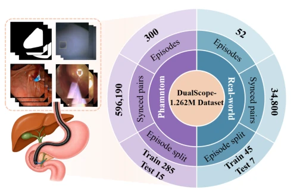
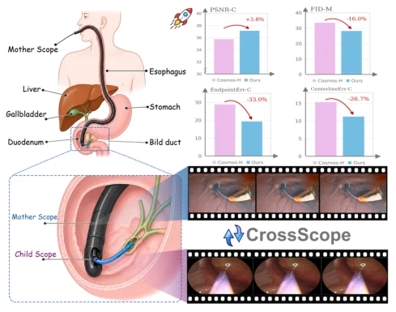
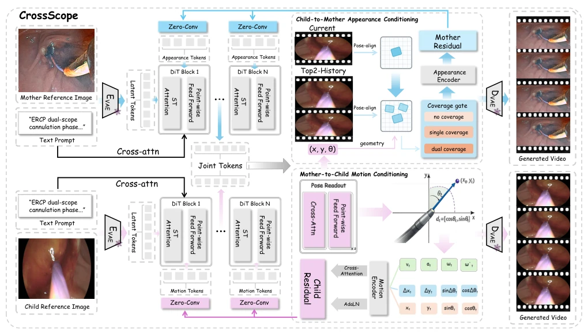
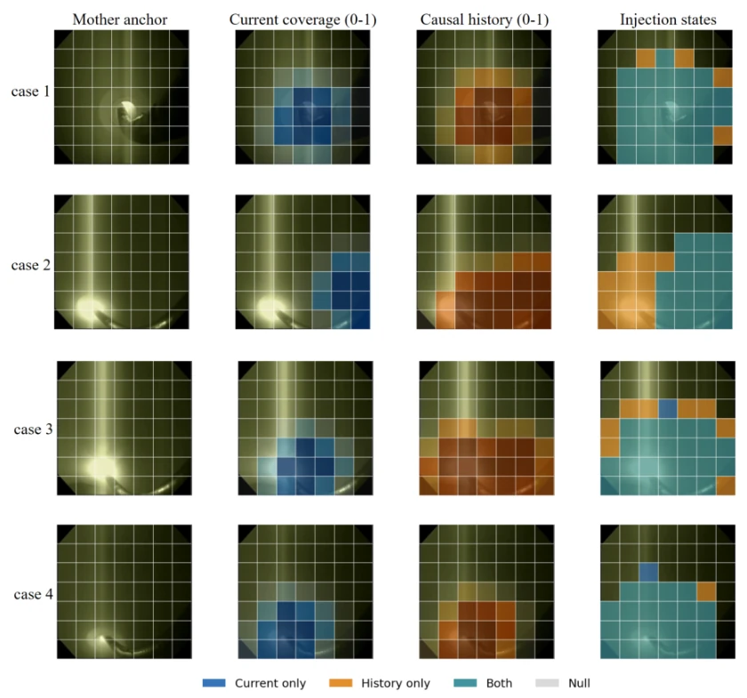
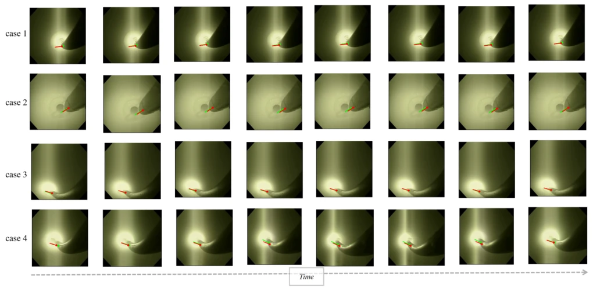
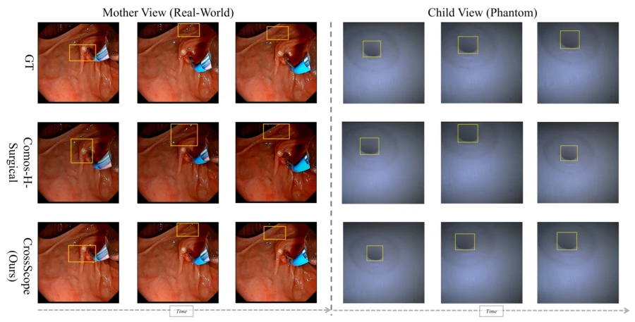
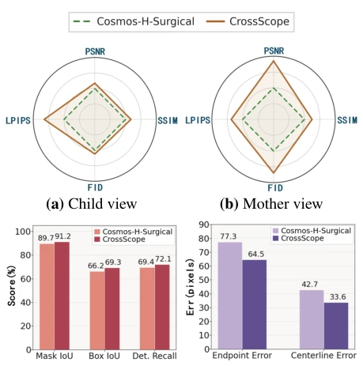
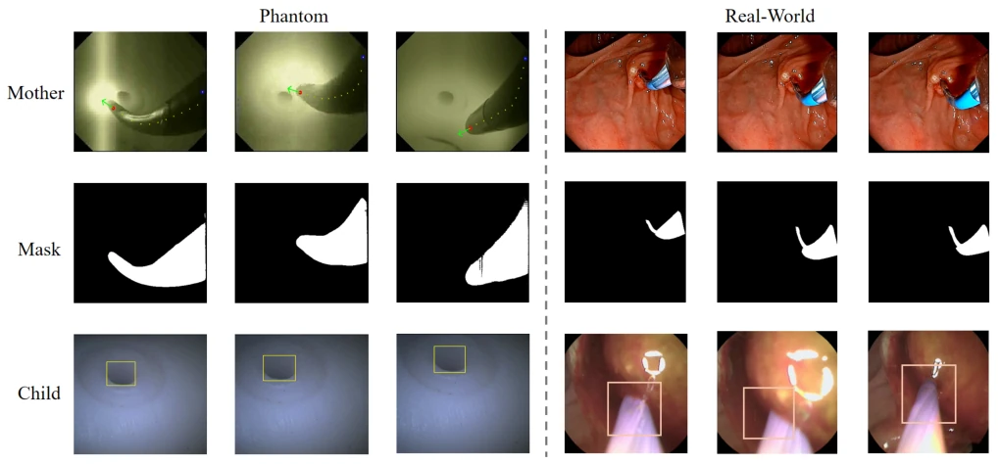
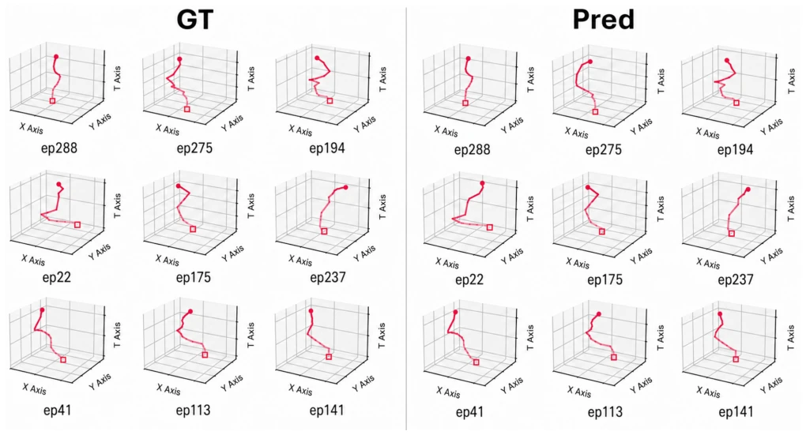

This paper offers a lesson to the surgical video prediction community: do not always rely on symmetric fusion; sometimes handling them independently proves superior. CrossScope establishes a role-unequal world model within the Mother-Child ERCP scenario, clarifying the relationship between 'global perspective' and 'local details'. M2C governs micro-motion using macro trajectories, while C2M supplements the macro picture with local details, yet only operates where geometry permits. This design is ingenious, avoiding the awkwardness of 'forced alignment' inherent in traditional multi-view fusion. However, limitations are evident: it is validated only on ERCP procedures, has a limited future horizon, relies on single real-world data, and remains distant from clinical deployment. It serves as a promising start for embodied vision world models in complex multi-view scenarios, but one should not expect immediate generalizability.
研究动机Motivation
现有视觉世界模型大多基于单流观测 (Ha and Schmidhuber 2018)，或假设多视图信息对称交换。但在 Mother-Child ERCP 中，两个柔性镜独立控制，无标定立体关系，信息互补但角色不同。现有方法如 Cosmos-H-Surgical (He et al. 2025) 或 Symmetric MoT 无法处理这种非等价证据交换。多视图重建假设共享几何 (Özsoy et al. 2022)，时序记忆仅保留单流证据 (Cheng and Schwing 2022)。这导致无法利用 Mother 的宏观几何引导 Child 运动，也无法在几何许可下用 Child 细节修正 Mother。本研究旨在解决这种角色依赖的跨视图证据路由问题，建立配对双镜基准。
Existing visual world models are predominantly based on single-stream observation (Ha and Schmidhuber 2018) or assume symmetric exchange of multi-view information. However, in Mother-Child ERCP, the two flexible endoscopes are independently controlled without calibrated stereo relationships; while information is complementary, the roles differ. Existing methods like Cosmos-H-Surgical (He et al. 2025) or Symmetric MoT fail to handle this non-equivalent evidence exchange. Multi-view reconstruction assumes shared geometry (Özsoy et al. 2022), while temporal memory retains only single-stream evidence (Cheng and Schwing 2022). This results in an inability to leverage the Mother's macro geometry to guide Child motion, nor to correct the Mother with Child details under geometric constraints. This study aims to address this role-dependent cross-view evidence routing problem and establish a paired dual-mirror benchmark.

Figure 2: Dual-scope benchmark composition. The bench- mark comprises paired phantom and real-world Mother– Child ERCP episodes with synchronized wide-view Mother and near-field Child streams; 1.262M denotes both views counted as individual frames.
CrossScope employs a dual-stream DiT expert architecture, preserving view-specific statistics. The overall workflow involves inputting synchronized Mother and Child videos to predict the future 8 frames. The core innovation lies in the 'role-preserving read-write contract': pre-injected states are read-only, while cross-view communication is written via zero-initialized residuals. Specifically, it is divided into two paths: 1) M2C (Mother-to-Child): Pose Readout extracts the Child tip trajectory from Mother, and M2C converts it into a Child motion residual, addressing the Child's lack of global reference. 2) C2M (Child-to-Mother): The Child view may reveal anatomical structures invisible to the Mother, but requires geometric support. C2M aligns current and historical observations via Pose-align, writing the Child appearance residual to the Mother only when geometric coverage permits. Additionally, Top2-History is introduced to select complementary historical observations. Training jointly supervises generation and geometric conditions, maintaining causal boundaries during inference. The core lies in target-dependent evidence allocation. The M2C path conditions Child motion using Mother plane trajectories, capturing displacement and turning through fine-grained and coarse-grained descriptors. The C2M path is more cautious, writing appearance residuals only when Child observations have geometric projection support on the Mother plane, otherwise remaining Null. This design prevents contamination by invalid information. The read-write contract ensures routing reads from pre-injected snapshots, avoiding intra-layer dependencies. Training utilizes Flow Matching, with a loss function encompassing generation, pose, and residual trajectory supervision.

Figure 1: CrossScope for role-asymmetric dual-scope future prediction. Mother and Child scopes provide complementary wide- and near-field observations; directional M2C and C2M routes jointly forecast both streams. The plots show represen- tative phantom-benchmark gains over Cosmos-H-Surgical.

Figure 3: CrossScope architecture. Separate DiT experts expose read-only pre-injection states. Frame 0 is the observed anchor, and future latent groups cover frames 1–4 and 5–8. Pose Readout maps Mother states to a Mother-plane trajectory, which M2C converts into Child motion residuals. C2M pose-aligns Current and up to two causal History observations, then writes or blends Mother residuals only under geometric support.

Figure 7: Geometry-licensed C2M evidence placement. Four held-out phantom windows from the 10,000-step C2M-only geometry-canvas ablation are visualized at the final denoising step. Columns show the Mother anchor, continuous Current coverage, continuous causal-History coverage, and the final discrete 7 × 7 injection state. Blue, orange, teal, and gray denote Current-only, History-only, dual-source, and Null support, respectively. This is a route diagnostic, not a complete-system performance result.

Figure 9: Visual validation of Pose Readout. Four held-out phantom windows at step 10,000 are shown over their nine temporally sampled Mother states. Red markers and rays denote Pose Readout predictions; green markers and rays denote mask-derived targets.
A paired dual-mirror benchmark was constructed, comprising 300 phantoms and 52 real ERCP clips. Baselines include HunyuanVideo-I2V, Wan2.2, Cosmos-H-Surgical, and symmetric cross-attention MoT. Evaluation metrics cover frame fidelity (PSNR, SSIM, FID, LPIPS) and task fidelity (Mask IoU, Box IoU, trajectory error). Experiments demonstrate that CrossScope significantly outperforms Cosmos-H-Surgical in Mother structure preservation and Child localization, with Endpoint error reduced by 33%. Ablation studies indicate M2C primarily improves Child trajectory, while C2M primarily improves Mother fidelity, with both being complementary. Real-world evaluation also verifies generalization.

Figure 4: Qualitative future prediction across views. Independent examples are shown for a real-world Mother sequence (left) and a phantom Child sequence (right). Rows show ground truth, Cosmos-H-Surgical, and CrossScope; yellow boxes mark comparison regions.

Figure 6: Real-world quantitative comparison on seven held- out episodes. Radar scores are normalized to Cosmos-H- Surgical (= 100), using reciprocal ratios for lower-is-better metrics. Bars report task-fidelity scores (%) and trajectory errors (pixels). Exact values are provided in Appendix D.

Figure 8: View-specific annotations in the Dual-Scope Benchmark. Each column is a synchronized Mother–mask–Child triplet; phantom and real-world examples are shown. In the Mother row, yellow points trace the mask-derived centerline, the blue circle marks the base, the red point marks the tip, and the green arrow marks its heading. The middle row shows the Mother segmentation map, and the Child row shows the papilla bounding box.

Figure 10: Output-level Child papilla trajectories for nine selected held-out phantom episodes at step 10,000. The left and right blocks compare target and CrossScope-generated mean bounding-box centers from 20 independent nine-frame windows sampled across each episode, in (X, Y, T) space. Open squares and filled circles mark the first and final detections.